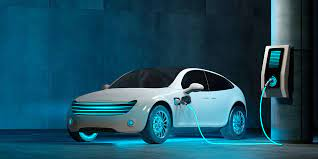

Vehículos Eléctricos
Los vehículos eléctricos han ganado popularidad en los últimos años debido a su menor impacto ambiental y mayor eficiencia energética. Empresas como Tesla han liderado este mercado con modelos innovadores y autonomía mejorada.
Tecnología de Baterías
Las baterías de iones de litio son la tecnología más comúnmente utilizada en vehículos eléctricos debido a su alta densidad energética y capacidad de recarga rápida. Sin embargo, se están investigando nuevas tecnologías de baterías para mejorar aún más la autonomía y reducir los tiempos de carga.
Conducción Autónoma
La conducción autónoma es un campo en crecimiento dentro de la industria automotriz. Las tecnologías avanzadas de asistencia al conductor y los sistemas de inteligencia artificial están permitiendo vehículos que pueden operar de manera autónoma en diversas condiciones.
Niveles de Automatización
La Society of Automotive Engineers (SAE) ha establecido seis niveles de automatización para los sistemas de conducción autónoma, desde sistemas de asistencia al conductor hasta vehículos completamente autónomos capaces de operar sin intervención humana.

Conectividad y Entretenimiento
Los automóviles modernos están equipados con sistemas avanzados de conectividad y entretenimiento. Esto incluye integración con teléfonos inteligentes, navegación GPS, sistemas de entretenimiento en el asiento trasero y más.
Integración con Dispositivos Móviles
La integración de teléfonos inteligentes permite a los conductores y pasajeros acceder a aplicaciones, música, llamadas y mensajes directamente desde el sistema de infoentretenimiento del vehículo, proporcionando una experiencia de conducción más conectada y conveniente.